25
Okt, 2022Глава No. 1
Вступление
Приветствую вас на моем первом курсе по 3д моделированию. На нем я планирую рассказать вам о работе в такой программе как Blender на примере создания персонажа. Мой курс будет включать в себя несколько этапов в которых вы: создадите персонажа используя инструменты скульптинга, познакомитесь с инструментами полигонального моделирования. Произведете ретапологию и развертку модели с последующим ее текстурированием, а после проведете рендеринги и портирование модели в игровой движок. Курс был сделан для программы “Blender” версии 3.3.
План Курса
1. Ознакомление с основными инструментами блендера и его настройкой.
2. Создание персонажа поэтапно.
3. Ретопология модели.
4. Текстурирование модели.
5. Создание скелета.
6. Портирование получившегося в игровой движок.
Настройка блендера
Этот пункт не обязателен если вы уже знакомы с программой блендер, пройдите ниже.
Открывая блендер, перед вами всегда вылезает подобное окно, в котором вам предлагают выбрать в каком формате вы хотите работать, если у вас есть файл можете открыть, а также полезные ссылки на материалы от разработчиков. Для нового проекта нажмите “General” или нажмите на любую часть экрана вне этого окна.
Для настройки блендера в меню “Edit” выберите пункт “Preferences”.
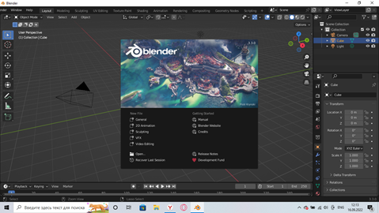
Первое на что можно обратить внимание это вкладка “Interface” пункт “Color Picker” Type в нем вы можете выбрать окно выбора цвета.
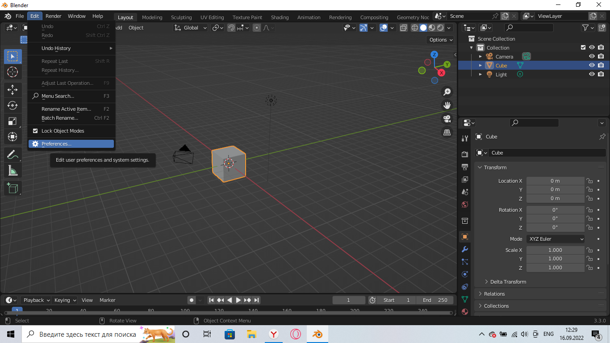
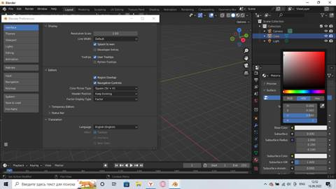
Я же более привык к квадратному, можете поэкспериментировать и выбрать этот параметр на свой вкус. Далее в этом же окне есть пункт “Translation”, и тут важная ремарка я советую оставить на английском языке, так как большинство гайдов и материала находится на нем и если вы привыкните к терминам, то сможете учится не только у русской части сообщества данной программы. Максимум вы можете сделать русским подсказки, поможет на первых парах и в дальнейшем если вы столкнетесь с незнакомым для вас инструментом, хотя перевод иногда отсутствует.
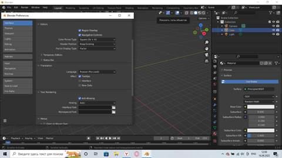
В разделе “Themes” находится темы самого блендера, проще говоря его цветовая палитра, которую вы можете изменять под себя, скажем днем если вам светит свет вы можете изменить интерфейс на светлую тему. Тут тоже чисто вкусовщина.
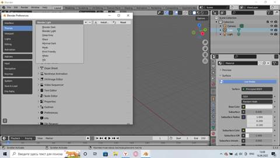
Раздел “Viewport” предлагаю оставить без внимания там находятся настройки отображения, так же пропустим разделы “Editing” и “Animation”. Лучше обратите внимание на них, когда чуть лучше разберетесь с блендером. Раздел “Lights” нужен для создания света, помогая осмотреть модель при разном освещении. “Add-ons” это довольна большая часть блендера, аддоны могут добавляют некоторые функции или облегчают какую-то работу, не стоит скачивать все сразу лучше делать это под нужды в ходе работы.
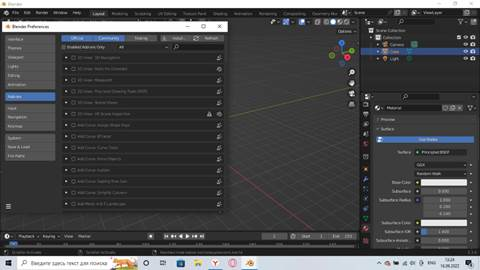
Перейдем сразу к пункту “Keymap” где можно настроить горячие клавиши блендера из такого могу выделить пункт “Tab for Pie Menu”, которая позволяет при нажатии кнопки Tab выбирать между всеми режимами работы с объектами или оставить как есть тогда при нажатии копки Tab вы будете переключатся сразу на “Edit mode”(меню редактирования) и обратно в “Object Mode”.
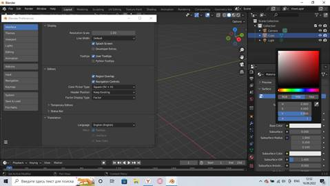
В меню System вы можете выбрать рендеринг с помощью вашей видеокарты, если у вас встроенная, то такой возможности нет. Так же не стоит выбирать одновременно и видеокарту, и процессор, так рендеринг зачастую будет более медленный, хотя может к этой версии и исправили. Так же стоит обратить внимание на параметр “Undo Steps” он отвечает за сохранение изменений с объектом. По умолчанию это 32 действия, если вам не понравилось, как что-то произошло вы сможете вернуть все назад комбинацией клавишей “ctrl+z”, не советую увеличивать количество действий для запоминания так как это жрет память.

Следующий пункт меню, а именно “Save & Load” имеет два важных параметра это “Save Versions” которая позволяет сохранять старые версии вашего файла, скажем вы сохранили файл потом поработали еще и снова сохранили у вас в папочке создаться файл с прошлой версией работы и появится новый с текущей версией. Пункт “Auto Save” определяет раз в сколько минут автоматически будет сохранять ваш файл.
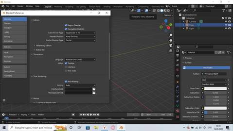
Последний пункт отвечает за пути программы его лучше тоже не трогать. Вот так бегло мы прошлись по настройкам блендера, как видите эта программа является весьма гибкой в плане настройки, которую вы можете сделать под себя. Впереди я кратко расскажу об основных инструментах.
Ознакомление с интерфейсом блендера.
В этом разделе я расскажу вам об интерфейсе программы, хотя частично вы с ним ознакомились еще на стадии настройки.
Меню File
Одно из самых частых меню, что используется в программе блендера найти его можно на верхней панели в левом углу экрана. Отвечает это меню за работу с файлами в основном. Так пункт “New” отвечает за создание файла.
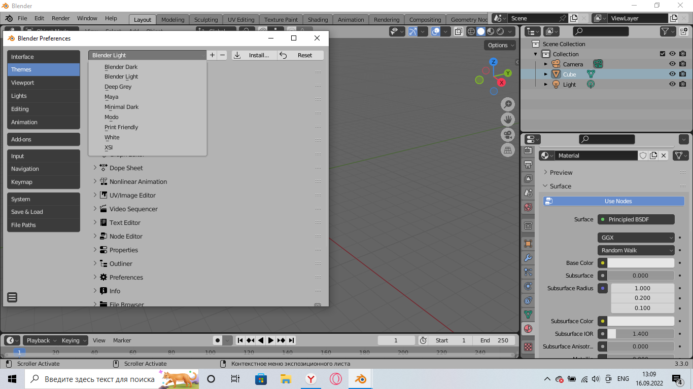
Функция “Open” открывает нужный вам файл, правда сперва выберите к нему путь. В то время как функция “Open Recent” отображает для открытия последние файлы, с которыми вы работали.
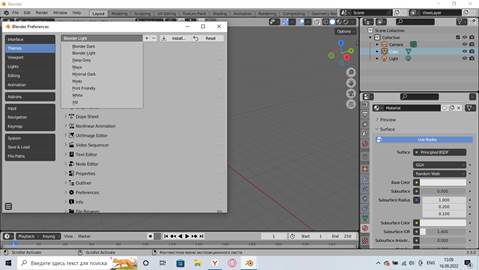
Пункт “Recover” самый полезный и выручающий, в нем есть две вкладки последняя сессия и авто сохранение, которое я упоминал ранее. Полезен этот пункт меню тем, что при выключении света, зависанию или выключению программы, вы сможете открыть или последний файл, в котором вы работали, но если вы сохранялись давно прогресс может быть утерян, тогда поможет пункт автоматического сохранения, где вы сможете если не полностью, то частично восстановить свой прогресс.
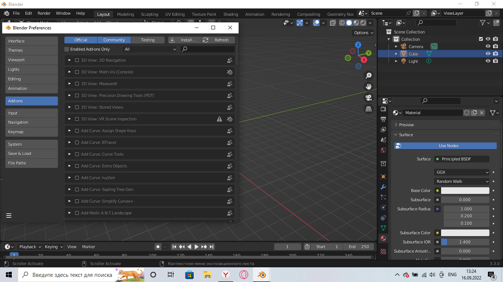
Пункты с сохранением я пропущу, так как они очевидны и служат для сохранения файла.
Пункт “Append” позволяет вам импортировать нужный элемент в текущий файл, будь то это 3д объект, текстура или материал.
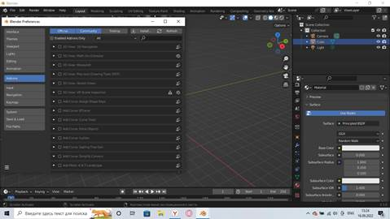
Пункт “Import” позволяет вам вставить в блендер файлы, созданные в другой программе, пункт же “Export” позволяет вам самим создать такой файл для импорта в другие программы. Расширить список подходящих форматов можно в настройках блендера, а также с помощью аддонов, ну и никто не мешает вам поставить сторонние аддоны, созданные для блендера и размешенных в открытом доступе.
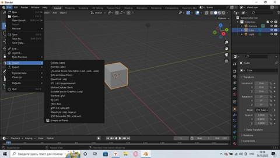
Пункт “External Data” нужен если вы хотите поделиться с кем-то своим файлом, скажем на форумах. Перед этим не поленитесь зайти и запаковать все файлы, связанные с вашей моделью, чтобы при открытии другой человек мог понять вашу ошибку.
Пункт “Defaults” так же не менее важен, но только скорее один раз. Так как позволяет пред установить параметры начального файла, скажем удалить все лишнее из сцены. Настроить окна и панели. А после сохранить и теперь открывая новый файл у вас всегда будут заданные вами параметры. А также вы в любой момент можете установить стандартные настройки.
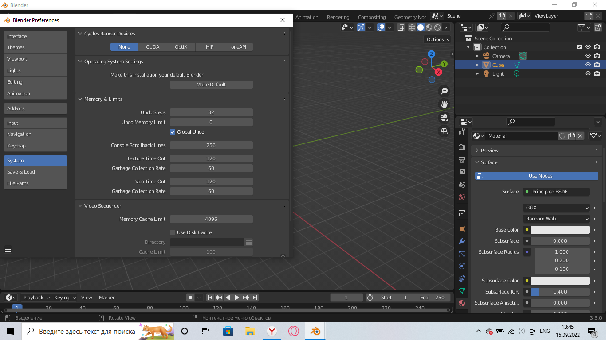
В меню Edit
есть такие вещи как “Undo” что отменяет ваше текущее действие и противоположность “Redo”, настройки куда мы уже заходили и возможно вам понадобиться пункт “Repeat Last” повторяющее ваше последнее действие.
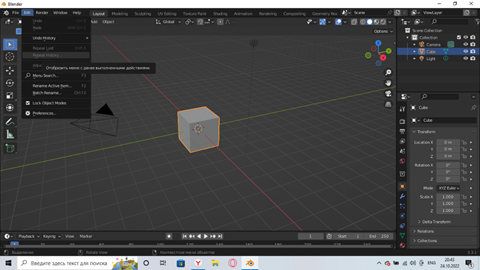
И как небольшое дополнение, это поможет вам немного сберечь нервы при прохождении моего курса. Если вы хотите ближе рассмотреть объект, то не обязательно делать это через колесико мыши, для этого нажмите точку на нонпад клавиатуре справа от стрелок, и вы автоматически приблизитесь к объекту.
Основные инструменты блендера
Создание Платформы
Так как я приверженец что изучать надо на практике инструменты будем рассматривать по мере их необходимости. А для этого зажав левую кнопку мыши выделим все лишнее и очистим сцену. Так же чтобы перемещаться по экрану зажмите колесико мыши, для отдаления или приближения покрутите колесико мыши.
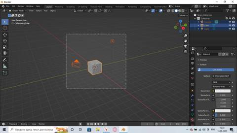
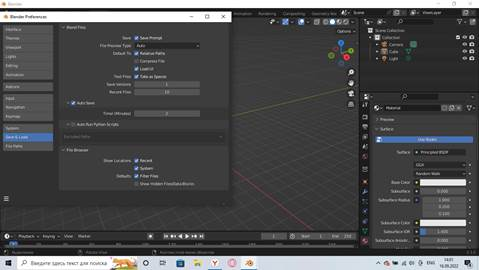
Очистив площадку, можно сразу запомнить одну очень важную горячую клавишу “Shift+A” с помощью этой комбинации можно добавлять на сцену стандартные фигуры, будь это куб, сферы или плоскость, а также дополнительные в виде камеры и света. Нам нужен цилиндр.

У вас на экране должен был появится цилиндр.
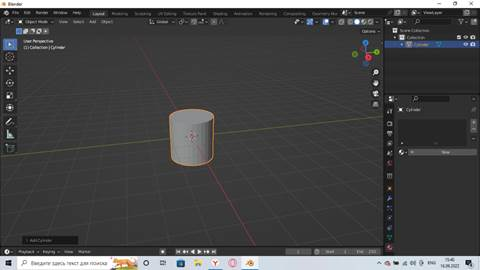
Настроим получившийся цилиндр, для этого нажимает в нижнем левом углу экрана на окошко “Add Cylinder”, где выберите нужные параметры в данном случаи количество граней и радиус, осторожней кликнув по экрану с открытым окном вы закроете его и не сможете редактировать.
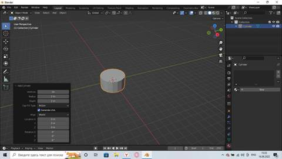
Далее выделив цилиндр нам нужно уменьшить его по вышине, для этого можно делать разными способами, но в данной ситуации лучше нажать горячую клавишу “S”, так мы сразу выберем инструмент масштабирования, позволяющий как, уменьшить так и увеличить объект при этом сохраняя пропорции. Но нам нужна лишь его высота, для этого после нажатия клавиши “S” нажимаем, на ту переменную по которой будем масштабировать, в нашем случаи это “Z”.
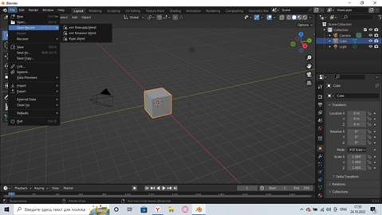
Переходим в “Edit mode” через “Tab”. У вас сразу выделится весь цилиндр сбросьте это выделение кликнув по другой части экрана, теперь нам надо выделить нижнюю линию вершин, это можно делать несколькими способами, через “shift” по одной вершине, но это долго, если кликнуть по уже выделенной точке, то с нее спадет выделение.
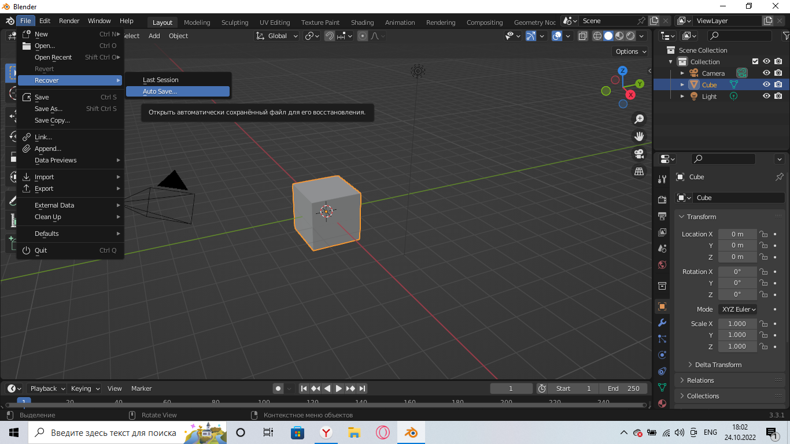
Можно через “ctrl”, так быстрее так как можно выделить сразу множество вершин. Просто кликните скажем по вершине через 4 от уже выделенной.
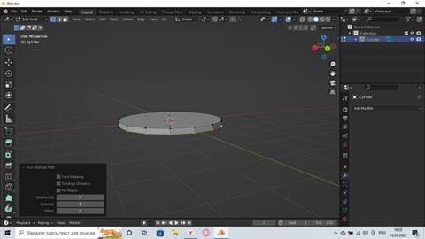
Ну и самый быстрый, но иногда не особо помогающий способ через “alt”, работает в основном с замкнутыми и прямыми линиями, если выделилось не совсем, то что надо щелкните снова по этой же точке.
У вас должно получится что-то такое, теперь с помощью уже знакомого инструмента масштабирования (горячая клавиша S) должны увеличить нижнюю грань.
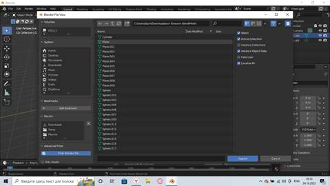
Теперь выделите верхнюю линию вершин, и затем нажмите клавишу “E”. Это инструмент экструдирование, он позволяет вытягивать объект, но сейчас нам нужно не это, нам нужно добавить вершины на плоскость, а потому после “E” нажимаем “S” и тяните ползунок к центру экрана, проделайте это несколько раз. Сделайте так же и с нижней гранью, но там достаточно сделать лишь 2 раза.
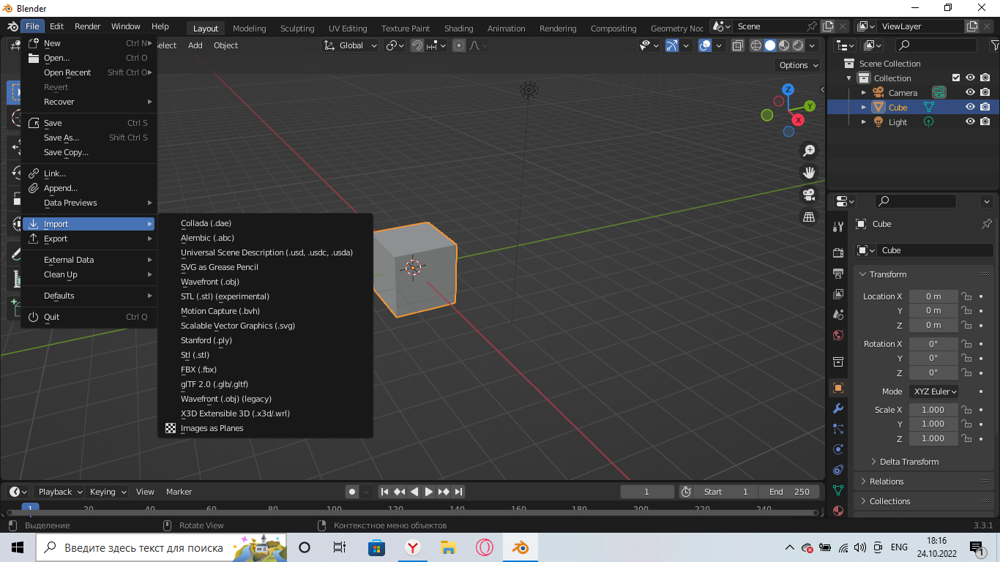
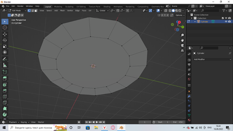
Ваша сетка должна выглядеть вот так, теперь соединим точки по середине в одну, для этого выделив их, нажмите правую кнопку мыши, а затем выберете данную опцию.
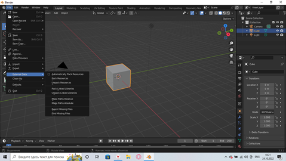
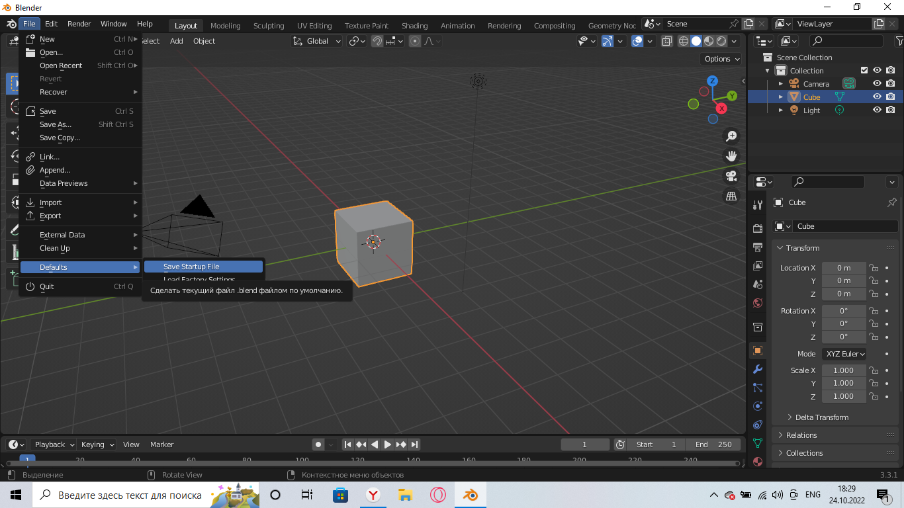
У вас должны точки соединится в одну, если так-то отлично. Теперь добавим еще вершин, для того чтобы, используя модификатор наша платформа не превратилась в блин, вот в такой.
Для этого все в том же “Edit Mode” нажмите комбинацию клавиш “ctrl+R” у вас появится желтая линия.
Нам нужна линия именно тут, теперь потяните ее вверх, но не допустите чтобы вершины соединились одна в одну.
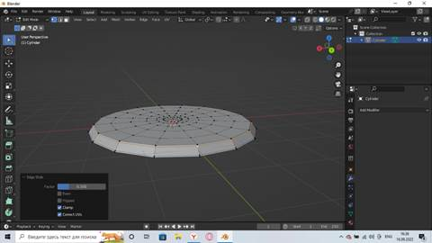
Чтобы у вас получилось вот так можете добавить побольше, но 2-3 вполне будет достаточно. Если вы случайно нажали, и линия у вас оказалась не там, где нужно, не стоит паниковать, можете выделив ее перемешать в плоскости используя горячую клавишу “G” нажав на нее 2 раза.
Теперь при применении модификатора наша платформа будет округлой и объемной, вот такой.
Немного о модификаторах, доступны они по умолчанию в “Editor Type” в правом углу экрана на иконке изображен ключ. Нам сейчас интересен модификатор “Subdivision Surface” который добавляет дополнительные вершины и скругляет объект. Чем выше параметр “Levels Viewp” тем круглее предмет будет, не переборщите с этим, поднимите показатель на один. Так же можно сгладить объект, нажав на объект правой кнопкой мыши и в самом верху нажмите на “Shade Smooth”.
25
Okt, 2022Глава No. 2
Создание Камней
Не считаете, что наша платформа пустовата и ей не хватает живости? Тогда используя новые инструменты и новые комбинации клавиш сейчас мы это исправим, но перед этим расскажу еще полезных вещей, которые облегчат вашу жизнь.
Если вы хотите выбрать один объект, а вместо него выделяется другой, который в ближайшее время вам не понадобится, то можете запретить выделять этот объект, для этого в верхнем левом углу находите иконку воронки, нажав на которую вылезет список найдите на нем стрелку и нажмите на нее.
Теперь в списке объектов в вашей сцене вы можете увидеть стрелки, нажмите на нее у того объекта что вам мешает, я предлагаю выбрать нашу площадку, которая если вы не поменяли название должна именоваться “Cylinder”.
Добавьте в нашу сцену новый объект куб, поднимите его вверх по оси Z, чтобы платформа нам не мешала и теперь перейдите в “Edit Mode”.
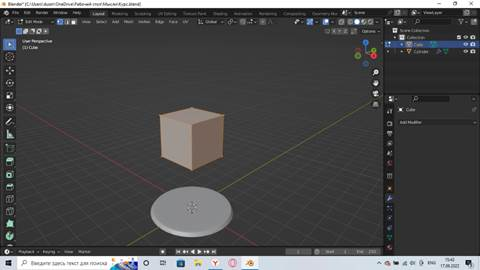
Найдите инструмент “Knife” его можно вызвать горячей клавишей “K”, но в данном случаи нам нужен не он сам, найдите его иконку и потяните по его иконке вниз и в подменю выбери инструмент “Bisect”.
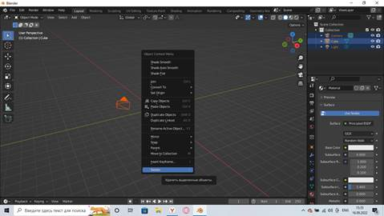
Далее используя инструмент отчерчивайте линию. У меня получилось вот так.
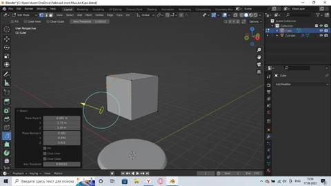
И в открывшемся окне выбирайте пункты “Fill” и “Clear Outer”, если у вас отнимается слишком большой кусок, то используйте “Clear lnner”. Затем выделите весь объект полностью нажав кнопку “A” повторяйте действие пока не получите камень такой формы которую хотите.
Чтобы наша платформа вам не мешала можете скрыть ее, нажав на боковой панели глазик или сделать проще, для этого выделив нужный вам объект нажмите слеш на нонпад клавиатуре, если не получится или у вас нет слеша на нонпад клавиатуре слеша. Заходим в меню “View” и находим пункт “Local View” После этого вы будете видеть только выделенный вами объект.
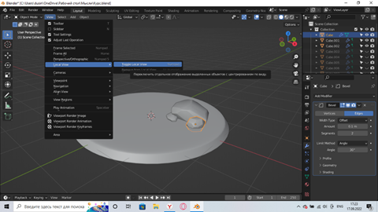
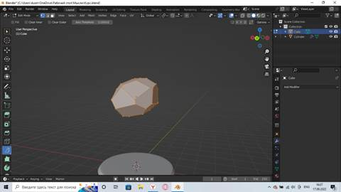
У меня получилось, что-то такое. Теперь переходим через Tab в “Object Mode” и чтобы углы не были столь острыми добавляем фаски через модификатор “Bevel” увеличивая параметр “Segments”, а чтобы камень был более гладким снова используйте “Shade Smooth”. Теперь уменьшайте камень с помощью масштабирования “S” перемещайте его через “G” и нового инструмента вращения с горячей клавишей “R” разместите свой камень на нашей платформе. Инструмент вращение зависит от того с какой стороны вы смотрите на объект, но также можете задать переменную, по которой будет происходить вращение.
Теперь создайте еще несколько подобных камней.
Можете сделать больше можете сделать как я всего 3, если больше, то будет более разнообразно. Теперь можете чуть больше заполнить платформу камнями копируя их. Это можно сделать разными способами, оба полезны, но по-своему. Самый частый который вы будете использовать это комбинация клавиш “Shift+D” эта комбинация позволяет скопировать объект сделав его отдельным объектом. Теперь редактируя его, вы не меняете оригинал и наоборот меняя оригинал вы не меняете копию.
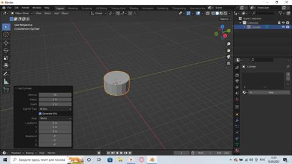
Второй способ связывает объекты, он применяется если нужно много одинаковых объектов для этого используется сочетание клавиш “Alt+D” используя этот метод меняя оригинал или копию меняются оба связанных объекта. Нам он не очень нужен в данной ситуации.
Используя уже изученные инструменты наполните нашу платформу камнями, постарайтесь оставить между ними место. Так чтобы у вас получилось нечто подобное.
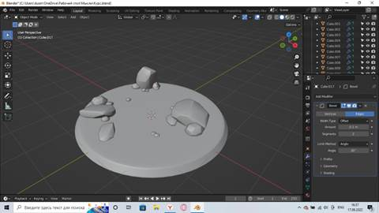
Создание Дорожки.
Наша платформа постепенно оживает, готовясь принять нового жителя, но все же она пустоватая, потому я предлагаю сделать дорожку, добавьте в нашу сцену плоскость.
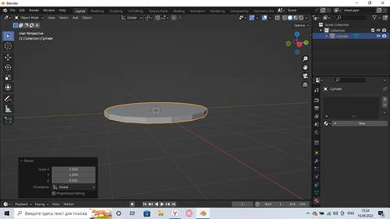
Поднимите ее вверх, чтобы было более удобно работать и все с тем же инструментом “Bisect” задайте ей форму. Создайте несколько таких плоскостей.
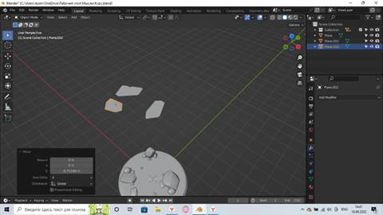
Теперь познакомимся с еще одним интересным модификатором, который добавляет плоским фигурам объёма. Для этого найдите в меню модификаторов “Solidify”

Теперь увеличивайте параметр “Thickness” и вы увидите, как плоскость превращается в нечто объёмное. Теперь добавьте модификатор “Bevel” И затем “Subdivision Surface”, а после сгладьте все это, чтобы у вас получилось подобие плиточки.
Теперь нужно так сделать все наши плиточки, но не спешите переключаться на другой объект и применять все модификаторы вручную, вы можете скопировать их с одного объекта на другой, для этого через Shift выделяйте нужные вам объекты, причем последним должен быть тот, у кого вы хотите скопировать модификаторы. Затем с помощью горячей клавиши “Ctrl+L” вызываем окно, где выбираем пункт “Copy Modifiers”
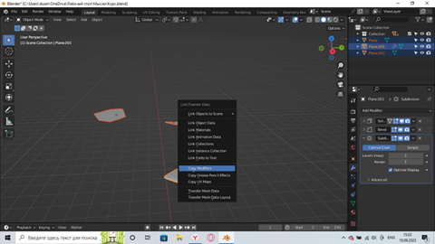
Комбинируя наши платки, вращая их и масштабируя выложите дорожку. В итоге у меня получилось нечто такое, теперь наша площадка уже довольно хорошо заполнена, но я бы показал вам еще пару интересных вещей перед созданием персонажа.
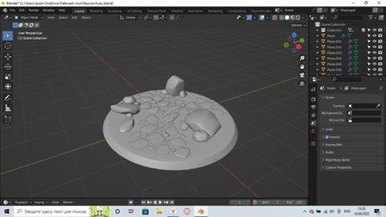
25
Okt, 2022Глава No. 3
Создание Пня.
Если честно очень долго думал о том, чем дополнить нашу композицию, Первое что приходило на ум это дерево, его не так сложно создать, множество тетрилов лежит на просторах интернета, а в самом блендере есть даже аддон с генерированными деревьями разных типов. Но у меня не получилось подобрать дерево для пустыни, потому мой выбор пал на пень.
Но перед этим хочу обратить ваше внимание на проблему, с которой вы возможно столкнулись во время выполнения прошлых этапов, а именно огромное количество объектов. Давайте создадим несколько коллекций чтобы по нужде скрывать не нужные объекты. Для этого обратите внимание на окно в правом верхнем углу экрана, я по привычке все камни объединил в одну коллекцию еще во время моделирования, так что я буду показывать на элементах нашей дорожки.
Для этого тыкните на любой объект правой кнопкой мыши и создайте новую коллекцию.
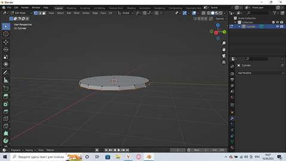
Затем выделите один объект в списке левой кнопкой мыши и пролистав ниже через shift выделите все предметы, для камней это должен быть “Cude”, так как камни мы создавали из кубов, а для дорожки это “Plane”, так как их мы создавали из плоскостей. Выделив нужное зажмите левою кнопку мыши над одним из выделенных объектов и перенесите их в нужную вам коллекцию.
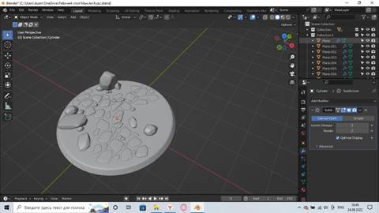
Для удобства назовите коллекции каким ни будь образом и, если хотите продавать в будущем модели на площадках, уже сейчас приучите называть модели на английском, скажем коллекцию с дорогой можно назвать “Trail”, а наши камни можно назвать “Stone”. Оставьте только нашу площадку вне коллекций, чтобы иметь к ней быстрый доступ.
Ну что с этим покончено, пора бы и пень начать делать, а то мы отвлеклись от нашего этапа. Для этого сделайте цилиндр на 10 подразделений, мы уже проделывали это через “Add Cylinder”.
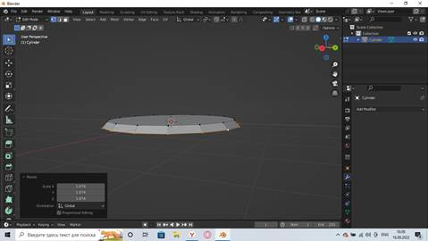
Перетащите цилиндр на примерное место дислокации и переходим в меню редактирования, сделайте дополнительные грани как мы уже делали. Через горячие клавиши E и S.
Добавим новые ребра, через комбинацию клавиш “Ctrl+R”, чтобы сделать не один разрез а 2 и более покрутите колесико мыши.
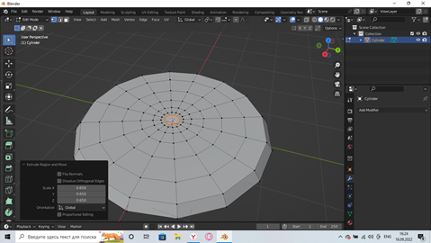
Расширите нижнюю часть и выделив верхние грани вытяните их.
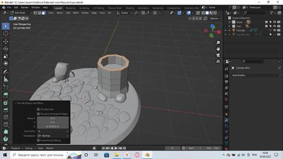
Не убирая выделения наклоните получившееся. Далее выделите пару граней вытяните их еще, чтобы вытягивание было более равномерное включите “Proportional Editing”.
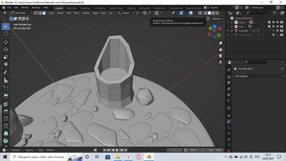
Можете порястягивать еще нижние грани нашего пня и поднять сильно выпавшее дно нашего пня примерно вот так.
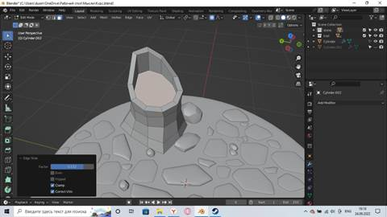
Далее с одной из сторон что вам приглянулась сделаем ветку, ну или ствол что когда-то выходил из нашего пня. Для этого выделив четыре соприкасающиеся грани нажмите на I и потяните чтобы у вас получилось нечто такое. 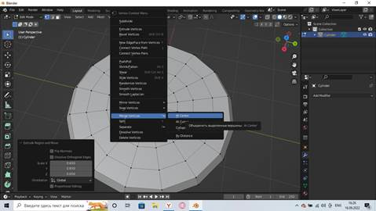
Теперь вы знаете об еще одном инструменте выдавливание, позволяющий выдавливать новую топологию на плоскости. Теперь выделите лишь ребра у только что выделенного квадрата.
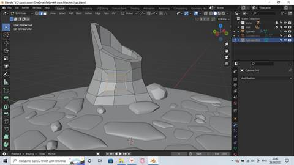
А затем используя комбинацию клавиш “Shift+Alt+S” и тяните чтобы скруглить ребра.
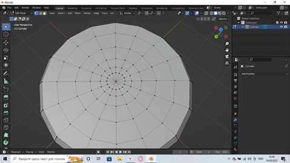
Получив округлую форму, выделите грани и экструдируете.
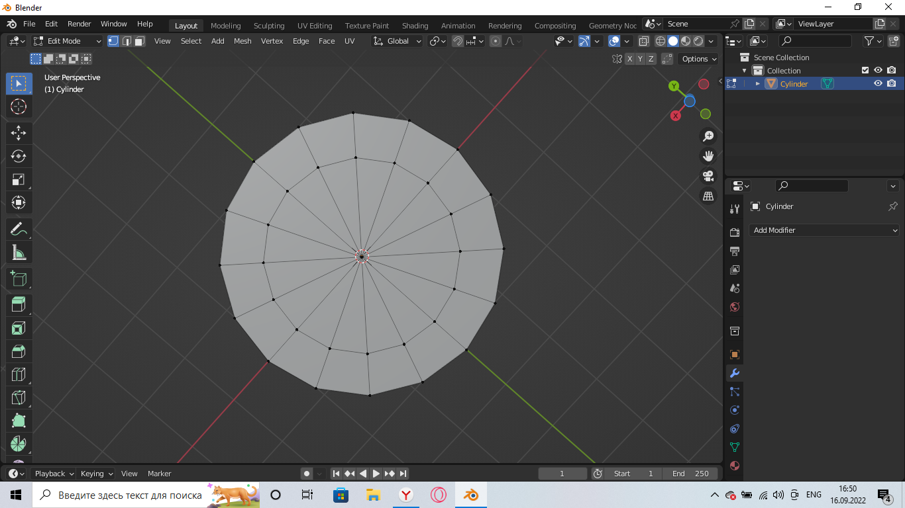
Чтобы выравнять наши грани нажмите S направление (например, X) возможно у вас оно будет другим и затем нажмите ноль.
Но это не смотрится, повертите наши грани.
Вытяните еще паре граней как корни и можете создать еще несколько небольших ветвей.
В конечном итоге у вас должно выйти что-то такое.
Страшно, но после того, как накинули модификаторы выглядит чуть лучше. Хотя можно оставить и лоу поли модель, теперь у нас почти готовая платформа.
25
Okt, 2022Глава No. 3
Создание травы.
Траву можно создавать тоже различными способами, множество уроков лежит на просторах интернета, но все они склоняются к системе частиц с помощью которой очень многие творят чудеса, но мы пока создадим траву.
Для этого создайте плоскость и поднимите ее вверх и переключив на вид сверху, отрегулируйте размер и перейдя в меню редактирования начните экстрадировать, обходя предметы на нашей платформе.
Расширяйте нашу плоскость и, если у вас возникнет такой участок или вы захотите сделать треугольник.
Экстрадируйте одну из вершин
Выделите вершину, с которой хотите соединить ее и нажмите F
Но вершины появились, а между нами нет грани, чтобы создать ее выделите все 4 точки и снова нажмите F.
Создав нечто такое переходим к системе частиц.
Она находится сразу под меню с модификаторами. Смените Emitter на Hair, у вас сразу отобразится подобное.
Уменьшите размер наших травинок до 0.1 в параметре Hair Lenght или меньше и повысьте количество частиц через параметр Number.
Включите галочку на параметре Advaced, что добавит параметр физика.
Теперь поиграйте с параметром Brownian, но не сильно.
Теперь это похоже на траву, опустите нашу плоскость вниз скрыв ее, но оставив видимой траву.
Теперь создайте еще пару таких плоскостей заполняя нашу платформу.
Получится что-то такое.
Ура мы закончили с нашей платформой, хотя вы можете добавить и что-то на свой вкус, скажем пару листиков на веточки у пня, сделать пару цветов чтобы трава не казалась такой скучной.